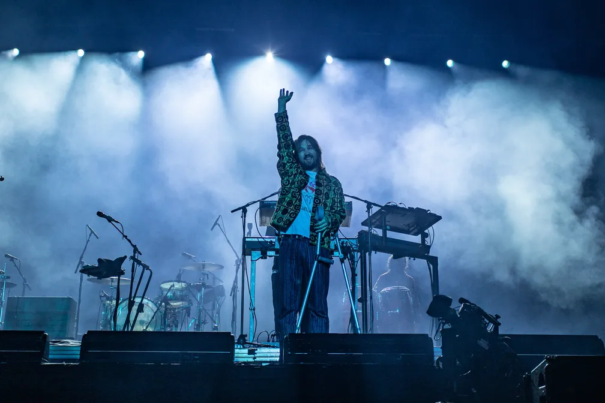
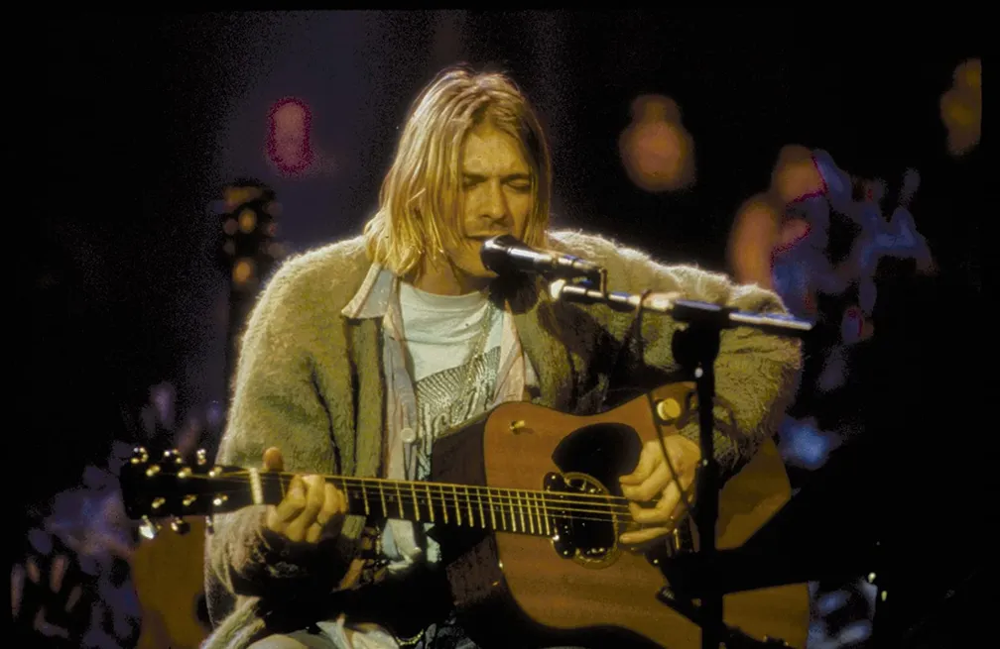
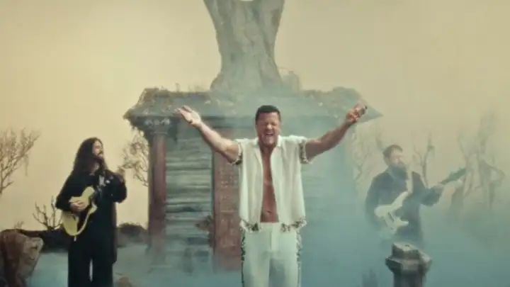
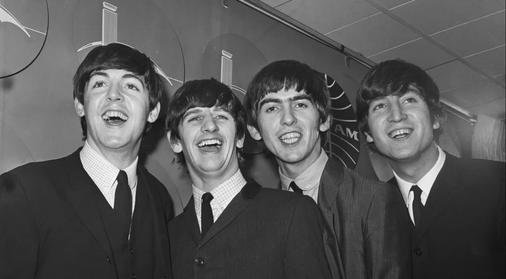
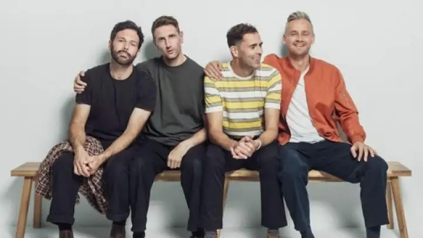

| Manchete | Descrição | |
|---|---|---|
|  | Tame Impala: Kevin Parker canta de muletas e encanta multidão com show esforçado no Lolla | Australiano veio ao Brasil com quadril fraturado e fez esforço para noite não perder 2 headliners. Show psicodélico mostrou por que eles são das poucas bandas de rock que não pararam no tempo. |
|  | Kurt Cobain: 30 anos após sua morte, líder do Nirvana mantém legado ao influenciar rappers de diferentes gerações | Morto em 5 de abril de 1994, músico é citado como referência por nomes como Jay-Z, Kendrick Lamar e Lil Nas X. |
|  | Imagine Dragons lança seu novo single e clipe, "Eyes Closed". | Banda está de volta com sua primeira música este ano |
|  | Recorde dos Beatles na Billboard completa 60 anos nesta quinta (4) | Banda de Liverpool dominou metade do Hot 100 da Billboad; recorde só foi igualado por Drake e Taylor Swift |
|  | Keane anuncia três shows no Brasil para novembro deste ano | Banda britânica passará por Curitiba, Rio de Janeiro e São Paulo. Ingressos começam a ser vendidos nesta semana! |